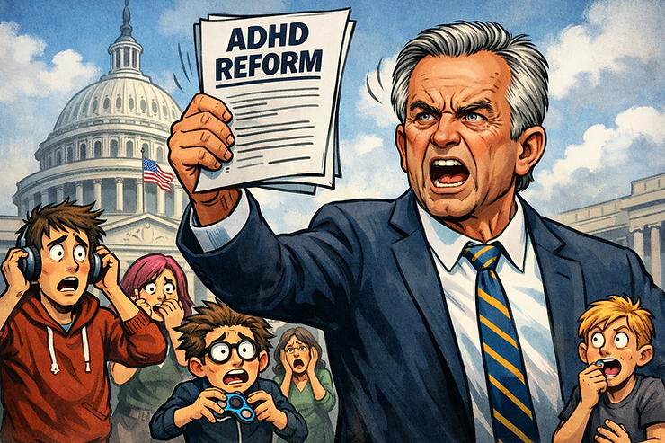

I was between tickets at my day job the other morning, waiting for a server reboot, scrolling through my phone during the kind of two-minute gap that sysadmin work is full of. And there it was again. Another headline about ADHD. Another politician explaining what my brain is, what causes it, and why the medication that helps me function might not be "necessary."
I put the phone down and sat with that familiar tightness in my chest. Not because the claims were new. But because I was about to switch gears from troubleshooting a network issue to prepping for a coaching session that evening, and in both of those worlds, ADHD is not a theory. It is the thing I navigate every single day. I manage systems and networks Monday through Friday. Then I coach, write, run support groups, and co-host the DadDHD Podcast in the hours around that. And somewhere in between, I am also a husband and a dad. That is what ADHD actually looks like. Not a policy brief. A full life, held together with intention, support, and yes, sometimes medication.
I hear the anxiety in my clients' voices during sessions. I see it in the questions showing up in our Discord. There is a low hum of fear running through our community right now, and it is not imaginary.
So let me say what I think needs to be said clearly, from the perspective of someone who was diagnosed at 35, who works a full-time IT job while building a coaching practice on the side, and who is raising a kid in a world that keeps debating whether he or his dad's brain is real.
ADHD is not a policy debate. It is my life. It is probably yours too.
What Is Actually Happening Right Now
If you have been feeling anxious about the news cycle around ADHD and medication, you are not making it up. In early 2025, an executive order from the administration labeled ADHD, autism, and what it called "over-utilization of medication" as threats to the American people. The Make America Healthy Again (MAHA) Commission, led by HHS Secretary Robert F. Kennedy Jr., launched a review of stimulant medications and released a report that multiple professional organizations, including CHADD, the American Psychological Association, and the American Academy of Pediatrics, have called misleading and dangerous.
Among the claims in that report: that ADHD is largely caused by environmental factors like screen time, that autism is a "preventable disease," and that stimulant medication is vastly over-prescribed. Some of the studies cited in the report were later found to not actually exist.
Here is the thing. I am not a policy analyst. I am not going to break down every line of this report. What I can do is tell you what I know from living this and working in this space every day: the framing matters. When the people making policy decisions describe ADHD as a lifestyle issue or a parenting problem, it does not just hurt our feelings. It shapes insurance decisions, school accommodations, workplace protections, and access to medication. That is real. That affects real families.
Let's Talk About the Medication Conversation Honestly
I want to be thoughtful here because the medication conversation is genuinely nuanced, and I think part of what frustrates people in our community is that nuance keeps getting flattened.
Not everyone with ADHD takes medication. Not everyone wants to, and not everyone needs to. That is completely valid. Coaching, environmental design, nervous system regulation, community support, all of these are powerful tools, and they are the foundation of the work I do through the POWER Framework. I believe deeply that ADHD support starts with the body, moves through ownership and design, and builds toward self-trust and growth.
But here is what the current political conversation gets wrong. It treats medication as the opposite of those things, as if choosing to take a stimulant means you have given up on yourself. For many of us, medication is what makes those other strategies possible. It is the floor, not the ceiling. It is what gets us regulated enough to show up for the coaching session, the family dinner, the morning routine. I can tell you from personal experience that managing enterprise IT systems requires sustained attention, task-switching, and follow-through, the exact executive functions ADHD makes harder. Support is not a shortcut. It is what keeps the whole thing running.
A landmark Swedish study of nearly 150,000 individuals found that starting ADHD medication was associated with 19% lower all-cause mortality. A separate study in the British Journal of Psychiatry found that ADHD reduces life expectancy by an average of 7.5 years, driven largely by unmet treatment needs. When researchers at Washington University recently discovered that stimulants work by activating reward and alertness systems rather than directly sharpening focus, it did not undermine the case for medication. It deepened our understanding of why it helps.
So when someone in a position of power says these medications are dangerous, and the data says the opposite, that gap matters. It is not a debate. It is people's lives.
The Part Nobody Talks About: The Emotional Weight of Being Debated
Here is what I want to name for those of you who have been carrying this quietly. Being debated is exhausting.
When your neurotype becomes a political football, something happens to your nervous system. You might notice you are checking the news more, or avoiding it entirely. You might feel a surge of anger followed by that heavy, flat nothing. You might find yourself rehearsing arguments in the shower, defending your existence to an invisible panel of people who have never lived a day in your brain.
I know what that feels like. I work a full-time job where nobody sees the scaffolding that keeps me functional. Then I come home and switch into coach mode, community builder mode, dad mode. Most days that juggle is something I am proud of. But when I see a headline questioning whether ADHD is even real, or whether the tools that help me are "over-prescribed," all that scaffolding suddenly feels fragile. And if I feel that way as someone who works in this space professionally, I can only imagine what it feels like for someone who just got diagnosed and is still figuring out what support even looks like.
For those of us with ADHD, rejection sensitivity makes this even harder. We are wired to feel criticism deeply, and right now, the criticism is coming from the top. It is systemic, and it is personal at the same time. That combination is a recipe for burnout, and I have been watching it unfold in real time across our community.
If you are feeling that weight right now, I want you to hear this: your response makes sense. You are not overreacting. The threat may not be as immediate as it feels (legal experts are clear that the commission cannot revoke FDA approvals or pull medications off the market), but the fear is real, the stigma is real, and the emotional cost of being publicly misrepresented is real.
Adult ADHD Advocacy: What We Can Actually Do From Here.
I will be honest. I go back and forth on this one. Part of me wants to say "just log off and protect your peace," and part of me knows that is not enough. So here is where I have landed. We do both. We regulate first, and then we act.
Take care of your nervous system. This is the Physical regulation piece of the POWER Framework, and it comes first for a reason. Before you write the email, before you share the article, before you engage in the comments, check in with your body. Are you breathing? Are you grounded? Advocacy from a dysregulated state tends to burn us out faster than it creates change.
Get informed, but set boundaries on consumption. Know what the commission can and cannot do. Read the fact-checks from Understood.org and ADDitude Magazine. Understand your rights. But you do not need to read every headline every day to be an informed advocate. Set a time limit. Pick your sources. Let the rest go.
Talk to your prescriber. If you are worried about medication access, have a direct conversation with your doctor about your options. The stimulant shortage is still ongoing, but telehealth prescribing flexibilities have been extended through the end of 2026. Your prescriber can help you plan.
Use your voice where it counts. Contact your representatives. Share your story with CHADD's advocacy network. Write a letter to your local paper. The neurodivergent community has more political power than we tend to realize, and every personal story shared pushes back against the narrative that ADHD is not real.
Lean into community. This is the "We" in the POWER Framework. You do not have to process this alone. Whether it is a support group, a Discord server, a coaching group, or a conversation with a friend who gets it, connection is protective. It is not a luxury. It is a strategy.
You Are Not a Talking Point and ADHD Is Not a Policy Debate
I became a coach because I spent 35 years not knowing why my brain worked the way it did. When I finally got my diagnosis, it changed everything. Not because it fixed me, but because it gave me language for what was already true. I was not lazy. I was not careless. I was not doing it on purpose. I just needed different tools and a different kind of support.
These days, I spend my mornings managing networks and servers, my evenings coaching and writing, and the spaces in between being a dad and a husband. It is a lot. It is not always graceful. But it works because I have built a life that accounts for my brain instead of fighting it. That is what I want for every person reading this. Not a debate about whether your brain is valid. Not a commission report about whether your support is justified. Just the tools, the understanding, and the community to build a life that actually works for the brain you have.
The political moment will pass. The headlines will cycle. But you will still be here, navigating your mornings and your relationships and your work and your kids with the same beautiful, chaotic, brilliant brain you have always had. And that is not a policy problem. That is just your life, and it is worth protecting.
If you are struggling with any of this, whether it is the anxiety of the news cycle, the practical challenge of medication access, or the deeper work of building systems that fit your brain, can help. You do not have to figure it out alone.
Until next time! Stay mindful and stay healthy!
References:
Li, L., Zhu, N., Zhang, L., Kuja-Halkola, R., D'Onofrio, B. M., Brikell, I., Lichtenstein, P., Cortese, S., Larsson, H., & Chang, Z. (2024). ADHD pharmacotherapy and mortality in individuals with ADHD. JAMA, 331(10), 850–860. https://doi.org/10.1001/jama.2024.0851
O'Nions, E., El Baou, C., John, A., Lewer, D., Mandy, W., McKechnie, D. G. J., Petersen, I., & Stott, J. (2025). Life expectancy and years of life lost for adults with diagnosed ADHD in the UK: Matched cohort study. The British Journal of Psychiatry, 226(5), 261–268. https://doi.org/10.1192/bjp.2024.199
Kay, B. P., Wheelock, M. D., Siegel, J. S., Raut, R. V., Chauvin, R. J., Metoki, A., Rajesh, A., Eck, A., Pollaro, J., Wang, A., Suljic, V., Adeyemo, B., Baden, N. J., Scheidter, K. M., Monk, J. S., Whiting, F. I., Ramirez-Perez, N., Krimmel, S. R., Shinohara, R. T., Tervo-Clemmens, B., Hermosillo, R. J. M., Nelson, S. M., Hendrickson, T. J., Madison, T., Moore, L. A., Miranda-Domínguez, Ó., Randolph, A., Feczko, E., Roland, J. L., Nicol, G. E., Laumann, T. O., Marek, S., Gordon, E. M., Raichle, M. E., Barch, D. M., Fair, D. A., & Dosenbach, N. U. F. (2025). Stimulant medications affect arousal and reward, not attention networks. Cell, 188(26), 7529–7546. https://doi.org/10.1016/j.cell.2025.11.039